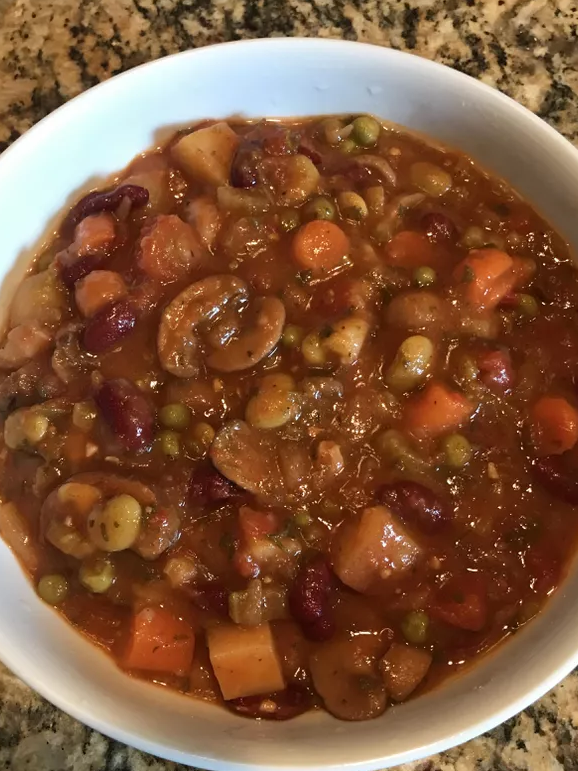

Mushroom Stew

Description
Hearty Instant Pot® stew that substitutes beef with mushrooms. I used peas and lima beans from my freezer. You could use just about anything. I used red beans for protein.
Ingredients
- 2 tablespoons salted butter
- 2 medium yellow onions, coarsely chopped
- 1 ½ cups chopped baby carrots
- 1 cup celery slices
- salt and ground black pepper to taste
- 1 (10 ounce) package baby bella mushrooms, chopped
- 1 (8 ounce) package baby bella mushrooms, sliced
- 1 (6 ounce) package white mushrooms, halved if large
- ½ cup red wine
- ½ teaspoon salt
- ½ teaspoon Cajun seasoning
- ¼ teaspoon ground paprika
- ¼ teaspoon ground thyme
- ¼ teaspoon dried sage
- ¼ teaspoon red pepper flakes
- 2 (14.5 ounce) cans stewed tomatoes with juice, chopped
- 2 tablespoons tomato paste
- 1 tablespoon soy sauce
- 1 tablespoon Worcestershire sauce
- 2 cloves garlic, minced
- 2 medium potatoes, peeled and diced
- 1 (15 ounce) can kidney beans, rinsed and drained
- 1 ½ cups frozen peas
- 1 ½ cups frozen lima beans
- 1 bunch parsley, chopped
- 2 bay leaves
- ½ cup sour cream
- 2 tablespoons cornstarch
Steps
- Turn on a multi-functional pressure cooker (such as Instant Pot®), add butter, and select Saute function. Add onions, carrots, and celery; saute until onions are translucent, 5 to 7 minutes. Season with salt and pepper and remove to a bowl.
- Add chopped and sliced baby bella mushrooms, white mushrooms, and wine to the pot; sweat mushrooms until soft and alcohol has cooked off, about 5 minutes.
- Stir in 1/2 teaspoon salt, Cajun seasoning, paprika, thyme, sage, and red pepper flakes. Add stewed tomatoes with juice, tomato paste, soy sauce, Worcestershire sauce, and garlic. Simmer until heated through, 3 to 4 minutes. Add onion mixture back to the pot and stir to combine.
- Add potatoes, kidney beans, peas, lima beans, parsley, and bay leaves; stir until combined and bay leaves are submerged. Close and lock the lid. Select high pressure according to manufacturer's instructions; set timer for 8 minutes. Allow 10 to 15 minutes for pressure to build.
- Release pressure using the natural-release method according to manufacturer's instructions, 15 minutes. Release remaining pressure carefully using the quick-release method according to manufacturer's instructions, about 5 minutes. Unlock and remove the lid. Stir in sour cream, followed by cornstarch if thickening is needed.
Source :)